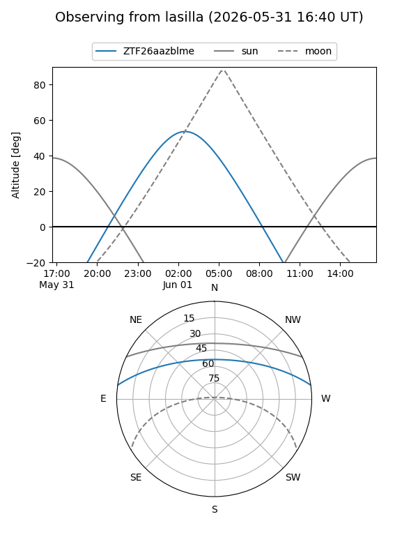
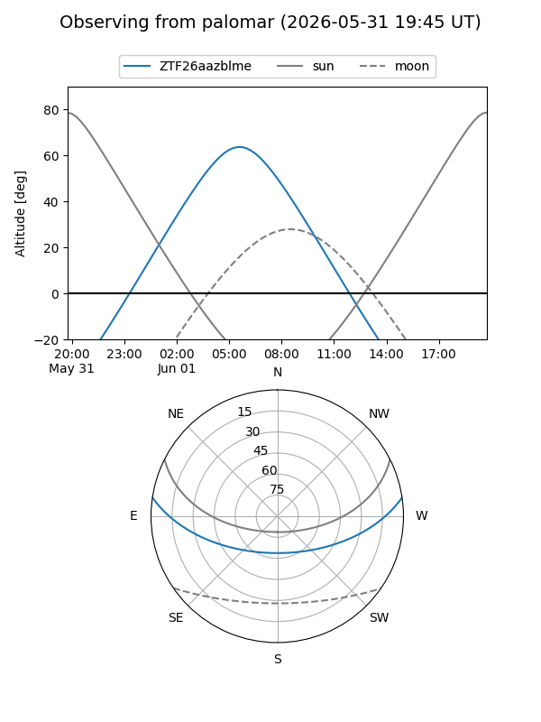

ZTF26aazblme
Target ZTF26aazblme at 2026-06-01 05:23
Aliases and brokers:
lsst-FINK: link
lsst-Lasair: link
lsst-ALeRCE: link
ztf-FINK: link
ztf-Lasair: link
ztf-ALeRCE: link
alt names
ZTF26aazblme (ztf,fink_ztf)
Coordinates:
equatorial (ra, dec) = 216.3988,+7.22464
equatorial (HMS+DMS) = 14:25:35.71,+07:13:28.69
galactic (l, b) = (355.5436,+60.08834)
Flags:
Photometry:
last ztfg=19.40
1 ztfg detections
Lightcurve
Visibility


Additional plots